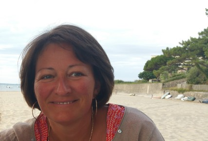

Un chemin vers le naturel

Passionnée par les médecines douces et par la nature depuis toujours, j'ai décidé de franchir le pas et de me former à la naturopathie après une première carrière bien remplie.
Titulaire d'un BTS d'assistante de direction, j'ai exercé ce métier pendant 15 années au sein de diverses entreprises. Riche de cette expérience humaine et professionnelle, j'ai choisi de mettre mes compétences au service de quelque chose qui me tient vraiment à cœur : votre santé naturelle.
À l'issue de ma formation en naturopathie et en réflexologie plantaire, je me suis consacrée entièrement à cette belle pratique. Aujourd'hui, je vous accueille en cabinet à Pessac ou en consultation à distance, avec la même conviction : chaque personne mérite un accompagnement sur mesure, respectueux de son être dans sa globalité.
La vie est belle, vivons-la au naturel !
Ma philosophie
La naturopathie doit s'adapter à l'âge, au mode de vie et aux besoins de chaque personne. C'est pourquoi j'aborde chaque consultation avec une écoute attentive et bienveillante, sans jugement, pour comprendre vos besoins profonds.
Mon objectif n'est pas de traiter les symptômes mais bien d'identifier et de corriger les causes profondes de vos déséquilibres, en vous donnant les clés pour prendre en main votre santé durablement.
Mes valeurs
Écoute & bienveillance
Chaque consultation commence par une écoute attentive de votre histoire et de vos ressentis.
Approche globale
Je considère la personne dans son ensemble : corps, mental et émotions.
Personnalisation
Chaque programme est unique, conçu spécifiquement pour vous.
Respect du corps
Uniquement des techniques naturelles, douces et respectueuses de votre métabolisme.
Ma formation
J'ai été formée aux grandes disciplines de la naturopathie, incluant la nutrition, la phytothérapie, l'hydrologie, la réflexologie plantaire et les techniques de gestion du stress.
Cette formation complète me permet de vous proposer des conseils adaptés et des soins variés, selon ce que votre organisme nécessite à chaque étape de votre vie.